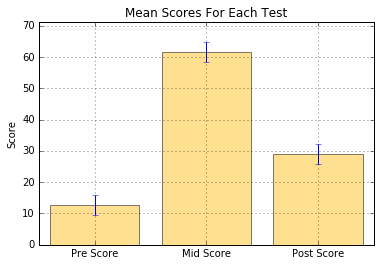

Learning machine learning? Try my machine learning flashcards or Machine Learning with Python Cookbook.
Bar Plot In MatPlotLib
Preliminaries
%matplotlib inline
import pandas as pd
import matplotlib.pyplot as plt
import numpy as npCreate dataframe
raw_data = {'first_name': ['Jason', 'Molly', 'Tina', 'Jake', 'Amy'],
'pre_score': [4, 24, 31, 2, 3],
'mid_score': [25, 94, 57, 62, 70],
'post_score': [5, 43, 23, 23, 51]}
df = pd.DataFrame(raw_data, columns = ['first_name', 'pre_score', 'mid_score', 'post_score'])
df| first_name | pre_score | mid_score | post_score | |
|---|---|---|---|---|
| 0 | Jason | 4 | 25 | 5 |
| 1 | Molly | 24 | 94 | 43 |
| 2 | Tina | 31 | 57 | 23 |
| 3 | Jake | 2 | 62 | 23 |
| 4 | Amy | 3 | 70 | 51 |
Make plot
# Create a list of the mean scores for each variable
mean_values = [df['pre_score'].mean(), df['mid_score'].mean(), df['post_score'].mean()]
# Create a list of variances, which are set at .25 above and below the score
variance = [df['pre_score'].mean() * 0.25, df['pre_score'].mean() * 0.25, df['pre_score'].mean() * 0.25]
# Set the bar labels
bar_labels = ['Pre Score', 'Mid Score', 'Post Score']
# Create the x position of the bars
x_pos = list(range(len(bar_labels)))
# Create the plot bars
# In x position
plt.bar(x_pos,
# using the data from the mean_values
mean_values,
# with a y-error lines set at variance
yerr=variance,
# aligned in the center
align='center',
# with color
color='#FFC222',
# alpha 0.5
alpha=0.5)
# add a grid
plt.grid()
# set height of the y-axis
max_y = max(zip(mean_values, variance)) # returns a tuple, here: (3, 5)
plt.ylim([0, (max_y[0] + max_y[1]) * 1.1])
# set axes labels and title
plt.ylabel('Score')
plt.xticks(x_pos, bar_labels)
plt.title('Mean Scores For Each Test')
plt.show()